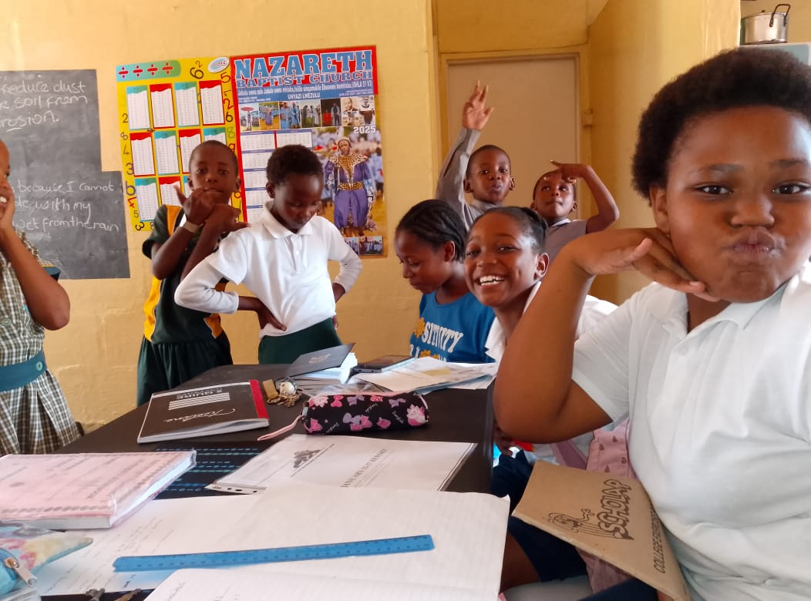

Program Detail
Each photo below represents a real community program we run. Hover, focus, or click a photo to reveal the full story for that activity. When your cursor leaves the card, the image appears again.